| Marcelo Affonso | RM559790 · responsável pelo relatório |
| Gabriel Couto | RM559579 |
| Gabriel Kato | RM560000 |
| João Vitor de Matos | RM559246 |
Este relatório aplica a gestão de riscos ao Moskitto Radar, uma CitizenTech em que moradores da Grande São Paulo relatam roubos e consultam o risco por lugar e horário. Foram mapeados 10 ativos, 6 agentes de ameaça, 11 ameaças, 13 vulnerabilidades e 11 riscos, avaliados por probabilidade e impacto pela tríade Confidencialidade, Integridade e Disponibilidade. Cinco riscos são altos. Para cada risco há um controle proposto, e quatro evidências técnicas testam os controles mais críticos: consultas parametrizadas contra SQL Injection, proteção contra LFI e chave de moderador na rota de moderação, todas aprovadas, e a varredura NMAP do servidor, parcialmente aprovada porque as portas do Active Directory seguem abertas.
Palavras-chave: gestão de riscos; tríade CIA; Security by Design; SQL Injection; LFI; NMAP.
O Moskitto Radar é uma CitizenTech para relatar roubos e consultar o risco por lugar e horário na Região Metropolitana de São Paulo, em 129 lugares: três bairros da Avenida Paulista, 88 distritos da capital e 38 municípios vizinhos.
A solução reúne um app mobile em React Native, uma API REST em ASP.NET Core com SQLite, um modelo de Machine Learning, um app de moderação em C#, uma câmera ao vivo simulada num ESP32 e um Windows Server com IIS. No projeto, a câmera fica no ponto de ônibus do lugar de maior risco previsto pelo modelo. Os 10.000 relatos do protótipo são simulados, sem dado pessoal real, e o modelo usa dados públicos e agregados da Secretaria da Segurança Pública (SSP-SP).
A análise passa por ativos, ameaças, vulnerabilidades, riscos, controles e evidências, sempre pela tríade Confidencialidade, Integridade e Disponibilidade (CIA). Cada risco recebe probabilidade e impacto de 1 a 3, e os controles seguem o princípio de Security by Design: a proteção é pensada junto com a solução, não depois dela.
São dez ativos a proteger. Os relatos, a localização e o banco concentram o que é mais importante para o cidadão.
| ID | Ativo | Onde fica | Responsável | C | I | D |
|---|---|---|---|---|---|---|
| A1 | Relatos de roubo | Banco SQLite | João Vitor de Matos | Média | Alta | Média |
| A2 | Localização dos relatos e do celular | App e banco | Gabriel Couto | Alta | Média | Baixa |
| A3 | Identificação do usuário (apelido e RM) | App e API | Gabriel Couto | Média | Média | Baixa |
| A4 | Banco de dados e migrações | Servidor | João Vitor de Matos | Alta | Alta | Alta |
| A5 | API REST | IIS | João Vitor de Matos | Média | Alta | Alta |
| A6 | Servidor Windows (IIS, AD e DNS) | Máquina virtual | Gabriel Kato | Alta | Alta | Alta |
| A7 | Modelo de ML e previsões de risco | Notebook e API | Gabriel Couto | Baixa | Alta | Média |
| A8 | Fila e decisões de moderação | App C# | João Vitor de Matos | Média | Alta | Média |
| A9 | Câmera do ponto de ônibus e sua credencial | ESP32 | Gabriel Kato | Média | Alta | Média |
| A10 | Segredos e configuração (strings de conexão, chaves) | Repositório e servidor | Toda a equipe | Alta | Alta | Média |
Fonte: elaborado pela equipe (2026). C, I e D: importância do ativo para Confidencialidade, Integridade e Disponibilidade.
Ativo mais sensível: a localização (A2). Cruzada com horário e descrição, pode apontar onde alguém mora ou passa, mesmo sem nome; por isso o local é sempre aproximado. A câmera (A9) transmite quadros de 32 × 16 pixels em tons de cinza, resolução que não permite reconhecer pessoas.
Quem ameaça a solução não é só o invasor técnico: também há quem publique relato falso e quem cruze o mapa com outras fontes para identificar alguém.
| Agente | Motivação | Ação |
|---|---|---|
| Usuário malicioso | Desinformar ou prejudicar uma região ou comércio | Envia relatos falsos ou em massa |
| Atacante externo oportunista | Invadir e roubar dados | Varre portas e testa SQL Injection e LFI com ferramentas prontas |
| Perseguidor com OSINT | Localizar ou intimidar alguém | Cruza relatos, horários e redes sociais |
| Criminoso interessado no mapa | Esconder ou desviar a atenção de uma área | Manipula o risco para uma área parecer segura |
| Pessoa com acesso interno | Abuso ou descuido | Usa conta de moderador ou administrador de forma indevida |
| Falha operacional | Sem intenção | Erra uma configuração ou perde dados sem backup |
Fonte: elaborado pela equipe (2026).
| ID | Ameaça | Ativos | Dimensão afetada |
|---|---|---|---|
| T1 | SQL Injection nos campos e filtros da API | A1, A4, A5 | Confidencialidade, Integridade |
| T2 | LFI (path traversal): ler arquivos do servidor pela API | A6, A10 | Confidencialidade |
| T3 | Relatos falsos e spam em massa | A1, A7, A8 | Integridade |
| T4 | Envenenamento do modelo de ML com dados falsos | A7 | Integridade |
| T5 | Reidentificação de vítimas por localização e OSINT | A1, A2 | Confidencialidade |
| T6 | Quadros falsos enviados como se fossem da câmera, ou clone do dispositivo | A9, A5 | Integridade, Disponibilidade |
| T7 | Interceptação de tráfego sem criptografia (HTTP) | A1, A3 | Confidencialidade, Integridade |
| T8 | Negação de serviço na API e no IIS | A5, A6 | Disponibilidade |
| T9 | Acesso indevido ao servidor por portas expostas ou senhas fracas | A6, A4 | Confidencialidade, Integridade, Disponibilidade |
| T10 | Uso indevido da moderação | A8 | Integridade |
| T11 | Vazamento de segredos pelo repositório ou pelo app | A10 | Confidencialidade |
Fonte: elaborado pela equipe (2026).
As vulnerabilidades mais graves estão na API e no servidor, porque são a porta de entrada de tudo. A tabela liga cada fraqueza às ameaças que ela abre.
| ID | Componente | Vulnerabilidade | Ameaças |
|---|---|---|---|
| V1 | API | Entrada sem validação e consulta SQL montada por concatenação de texto | T1 |
| V2 | API | A API lê arquivos de dados do disco; se o nome ou o caminho viesse da requisição, abriria LFI | T2 |
| V3 | API | Sem limite de requisições e sem autenticação no envio de relatos | T3, T6, T8 |
| V4 | API, app e ESP32 | Tráfego em HTTP, sem TLS | T7 |
| V5 | Banco | Arquivo SQLite no servidor com permissões NTFS amplas e sem backup | T9 |
| V6 | Servidor | Portas e serviços desnecessários abertos (RDP, SMB), contas padrão e senhas fracas | T9, T8 |
| V7 | IIS | Listagem de diretório, erros detalhados e cabeçalhos que revelam a versão | T2, T9 |
| V8 | App mobile | Dados no aparelho sem criptografia e coordenada precisa guardada | T5 |
| V9 | ESP32 | Credencial embutida no firmware e sem autenticação do dispositivo que envia os quadros | T6, T11 |
| V10 | App C# | Moderador sem login e sem registro das ações | T10 |
| V11 | Modelo de ML | Treino com relatos não moderados e sem detecção de valores fora do padrão | T4 |
| V12 | Dados | Texto livre pode conter telefone, placa ou nome; coordenada exata expõe o local | T5 |
| V13 | Repositório | Chaves e strings de conexão enviadas ao GitHub | T11 |
Fonte: elaborado pela equipe (2026).
Cinco dos onze riscos são altos. A nota é a probabilidade vezes o impacto, cada um de 1 a 3: até 2 é baixo, de 3 a 4 é médio e 6 ou mais é alto. A Figura 1 posiciona cada risco na matriz.
Fonte: elaborado pela equipe (2026). Verde: baixo; amarelo: médio; vermelho: alto.
| ID | Cenário | Prob. | Impacto | Nota | Nível |
|---|---|---|---|---|---|
| R1 | Alguém digita ' OR '1'='1 no filtro de bairro e a API devolve ou altera todos os relatos, ou apaga a tabela | 2 | 3 | 6 | Alto |
| R2 | Uma requisição com ..\..\ no caminho de um arquivo de dados lê arquivos de configuração do servidor | 2 | 3 | 6 | Alto |
| R3 | Um usuário envia dezenas de relatos falsos e faz uma rua inocente parecer perigosa, ou o contrário | 3 | 2 | 6 | Alto |
| R5 | Um perseguidor cruza local, horário e descrição de um relato e descobre onde a vítima mora ou passa | 2 | 3 | 6 | Alto |
| R9 | Um atacante encontra RDP ou SMB aberto, adivinha uma senha fraca e controla o servidor | 2 | 3 | 6 | Alto |
| R4 | Relatos falsos entram no treino e o modelo passa a prever o risco errado | 2 | 2 | 4 | Médio |
| R6 | Alguém copia a credencial do ESP32 e envia à API quadros falsos como se fossem da câmera | 2 | 2 | 4 | Médio |
| R7 | Em rede aberta, alguém lê os relatos e o RM que trafegam em HTTP | 2 | 2 | 4 | Médio |
| R8 | Uma enxurrada de requisições derruba o IIS e o mapa fica fora do ar | 2 | 2 | 4 | Médio |
| R11 | Uma chave ou string de conexão vai para o GitHub e fica pública | 2 | 2 | 4 | Médio |
| R10 | Um moderador aprova ou rejeita relatos sem deixar registro | 1 | 2 | 2 | Baixo |
Fonte: elaborado pela equipe (2026).
Atenção especial: R3. É o único risco de probabilidade alta, porque qualquer pessoa pode enviar um relato. Ele não some com um controle técnico simples, e por isso a moderação é central no plano da seção 6.
Cada risco alto tem pelo menos um controle preventivo, e os riscos R1, R2, R9 e R10 também têm evidência técnica na seção 7. Na coluna de situação, Previsto indica que o controle está no plano da equipe e ainda precisa ser comprovado.
| Risco | Controle | Tipo | Evid. | Situação |
|---|---|---|---|---|
| R1 | Consultas parametrizadas; validação de tipo, tamanho e valores permitidos; usuário do banco com o mínimo de permissão; erros genéricos | Preventivo | E1 | Implementado |
| R2 | Nome de arquivo fixo; caminho montado só a partir da pasta de dados; nenhum caminho vindo da requisição; dados fora da pasta pública | Preventivo | E2 | Implementado |
| R3 | Moderação antes da publicação; limite por apelido e hora; chave contra duplicados; bloqueio de telefone e placa | Preventivo e detectivo | E4 | Parcialfalta o limite de envios |
| R4 | Treinar só com relatos aprovados; descartar valores fora do padrão; revisar o conjunto antes de um novo treino | Preventivo | Previsto | |
| R5 | Mostrar local aproximado, nunca o endereço; agrupar poucos relatos; bloquear dados pessoais; coordenada arredondada a 3 casas | Preventivo | Implementado3 casas, cerca de 110 m | |
| R6 | Chave por dispositivo; limite de envios; origem da câmera identificada; quadros só aceitos de dispositivos cadastrados | Preventivo e detectivo | Previstotransmissão simulada | |
| R7 | HTTPS no IIS; redirecionamento de HTTP para HTTPS; HSTS | Preventivo | Previsto | |
| R8 | Limite de taxa e de tamanho; alertas de CPU, disco e memória; recuperação automática do serviço | Preventivo e corretivo | Previsto | |
| R9 | Firewall só com as portas necessárias; RDP com NLA e restrito por IP; SMBv1 desligado; senhas fortes; varredura NMAP | Preventivo e detectivo | E3 | Parcialportas do AD abertas |
| R10 | Chave por moderador, guardada só como hash; registro de quem decidiu; recusas no log | Preventivo e detectivo | E4 | Implementado |
| R11 | Segredos fora do repositório; nenhuma chave no app; revisão do histórico do Git | Preventivo | Previsto |
Fonte: elaborado pela equipe (2026).
Moderação protegida (R3 e R10). Todo relato novo entra como pendente, e só a rota PATCH /api/relatos/{id}/status aprova ou rejeita. Ela exige a chave de um moderador e grava quem decidiu (evidência E4). Enquanto a API usar HTTP, a chave trafega sem criptografia; por isso o HTTPS (R7) continua necessário.
As quatro evidências testam os controles dos riscos R1, R2, R9 e R10. Cada uma mostra o comando e a resposta real, sem edição.
| Evidência | Risco e tema | Responsável | Atividade | Data | Situação |
|---|---|---|---|---|---|
| E1 | R1 · SQL Injection | João Vitor de Matos | Código e testes | 16/11/2026 | Aprovada |
| E2 | R2 · LFI | João Vitor de Matos | Código e testes | 16/11/2026 | Aprovada |
| E3 | R9 · Portas do servidor | Gabriel Kato | Servidor e varredura | 17/11/2026 | Parcial |
| E4 | R10 · Moderação | Gabriel Couto | Código e testes | 17/11/2026 | Aprovada |
Fonte: elaborado pela equipe (2026).
| O que prova | A API trata o texto recebido como dado, nunca como parte do comando SQL. |
|---|---|
| Resultado | Aprovada Nenhuma entrada maliciosa alterou, apagou ou revelou dados. |
| Como | João Vitor de Matos testou a API em 16/11/2026 (http://localhost:5207, com 10.000 relatos simulados) usando scripts PowerShell que mostram o comando e a resposta. |
| Teste | Entrada maliciosa | Resposta | Conclusão |
|---|---|---|---|
| Filtro de bairro | ' OR 1=1 --, ' OR '1'='1 e UNION SELECT | 400 com { "erro": ... } | Recusado; nenhum relato devolvido |
| Criar relato (descrição) | Injeção no texto da descrição | 201, gravado como texto comum | Tratado como dado; não executa |
| Criar relato (bairro) | Injeção no bairro | 400 | Recusado pela lista de lugares válidos |
| Id na rota | Injeção no id | 404; o total continua em 10.001 | Nenhuma linha alterada ou apagada |
| Log do EF Core | Consultas da própria API | SQL com parâmetros (@codigo, @p, @p0) | Consulta parametrizada |
Fonte: testes de João Vitor de Matos (16/11/2026).
No código. Em RelatosController.Listar, os filtros entram como parâmetros do LINQ do Entity Framework Core, que gera SQL parametrizado. Antes disso, o bairro é conferido contra a lista de lugares, e o tipo e o status só aceitam valores conhecidos. Na criação, a descrição tem limite de 280 caracteres. Os erros voltam genéricos, sem detalhe interno.
// Os filtros entram como parâmetros do LINQ: o EF Core gera SQL parametrizado.
var consulta = db.Relatos.AsNoTracking();
if (!string.IsNullOrWhiteSpace(bairro))
{
if (!await db.LugarExiste(bairro, cancelamento))
return BadRequest(new RespostaErro(ErroBairro(bairro)));
consulta = consulta.Where(r => r.Bairro == bairro);
}
if (!string.IsNullOrWhiteSpace(tipo))
{
if (!CodigoEnumConverter<TipoRelato>.TentarLer(tipo, out var valor))
return BadRequest(new RespostaErro(ErroTipo));
consulta = consulta.Where(r => r.Tipo == valor);
}
Fonte: soa/MoskittoRadar.Api/Controllers/RelatosController.cs, método Listar (trecho; quebras de linha ajustadas para caber na página).
400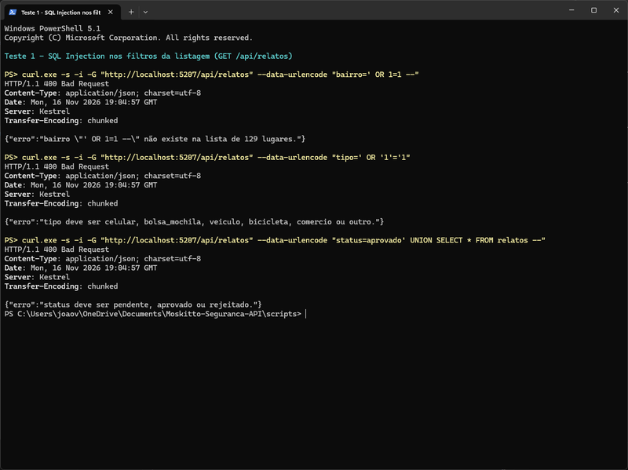
Fonte: João Vitor de Matos (16/11/2026).
201); no bairro, é recusada (400)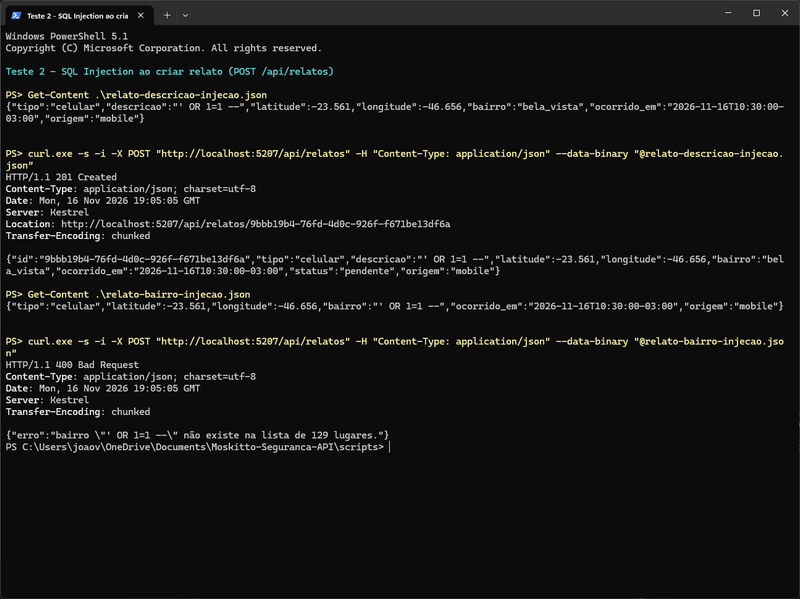
Fonte: João Vitor de Matos (16/11/2026).
404) e conferência do total: 10.000 da carga inicial mais 1 criado no teste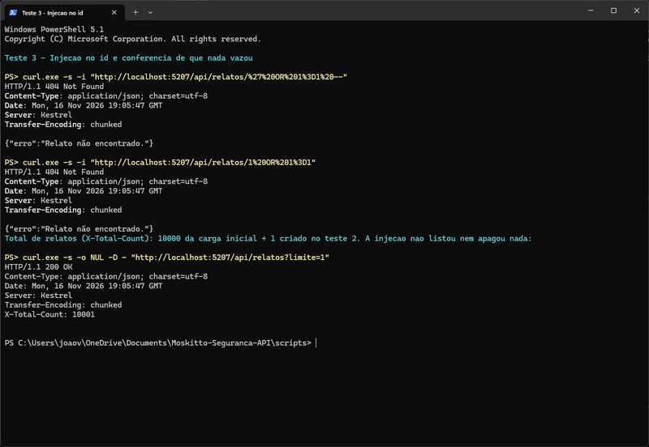
Fonte: João Vitor de Matos (16/11/2026).
@codigo, @p, @p0)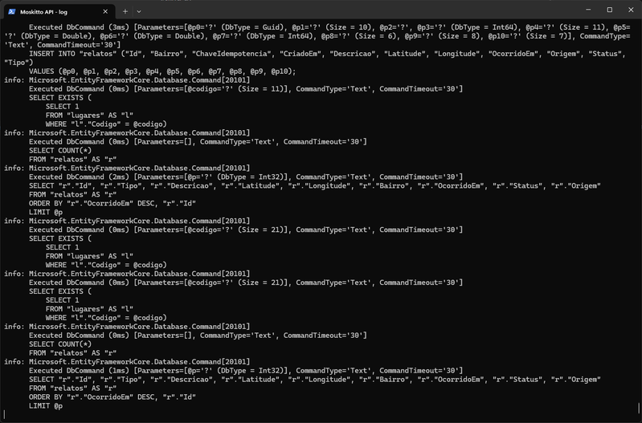
Fonte: João Vitor de Matos (16/11/2026).
| O que prova | Nenhuma parte da requisição consegue levar a API a ler um arquivo fora da pasta de dados. |
|---|---|
| Resultado | Aprovada Todas as tentativas voltaram 404 ou 400, sem conteúdo de arquivo. |
| Como | João Vitor de Matos tentou ler ../../windows/win.ini de várias formas: no caminho da URL (com --path-as-is), com o id codificado e nos filtros. O script 04-lfi.ps1 guarda os comandos. |
No código. A API não tem rota que receba nome ou caminho de arquivo. Ela só lê arquivos na carga inicial do banco, quando as tabelas estão vazias, e com três nomes fixos dentro da pasta de dados. Depois disso, relatos e previsões saem do banco.
using var transacao = db.Database.BeginTransaction();
Carregar(db, db.Lugares, () => LerLugares(Path.Combine(pastaDados, "lugares.csv")),
"lugares", logger);
Carregar(db, db.Relatos, () => LerRelatos(Path.Combine(pastaDados, "relatos_simulados.csv")),
"relatos simulados", logger);
Carregar(db, db.Previsoes, () => LerPrevisoes(Path.Combine(pastaDados, "previsoes.json")),
"previsões de risco", logger);
transacao.Commit();
Fonte: soa/MoskittoRadar.Api/Data/CargaInicial.cs, método Executar (trecho; quebras de linha ajustadas para caber na página).
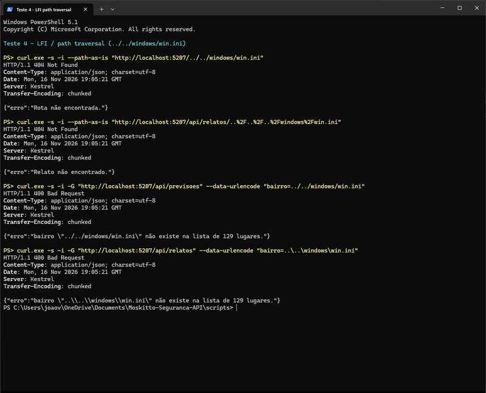
Fonte: João Vitor de Matos (16/11/2026).
| O que prova | Só as portas necessárias estão acessíveis no servidor Windows. |
|---|---|
| Resultado | Parcial 65.511 das 65.535 portas estão filtradas, mas as portas do AD seguem abertas. |
| Como | De uma VM Debian da rede do laboratório, Gabriel Kato rodou nmap -sV -p- moskitto.br -oN nmap-vm.txt contra a VM da equipe (10.0.1.1), que é nossa e está autorizada. |
O firewall do Windows, com os três perfis ativos, descarta o tráfego das portas filtradas. RDP (3389) e HTTPS (443) não estão abertos. O NMAP identifica o Microsoft IIS 10.0 na porta 80, e o IIS tem o site MoskittoRadarAPI; no print do servidor, /api/health responde ok em localhost:5000. Há regras de entrada próprias para a API, nas portas 5207 e 5000.
moskitto.br (10.0.1.1)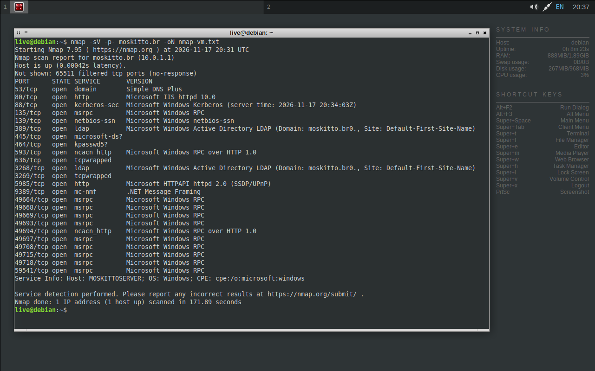
Fonte: Gabriel Kato (17/11/2026).
Como a VM também é controladora de domínio (AD e DNS), as portas abertas abaixo existem por necessidade e não por erro, mas deveriam ser alcançáveis só pela rede interna. Essa é a parte que falta fechar.
| Porta | Serviço | Necessidade | Resultado do NMAP |
|---|---|---|---|
| 80 | HTTP do IIS | Sim; serve a API em HTTP | Aberta Microsoft IIS 10.0 |
| 443 | HTTPS do IIS | Sim | Não aberta HTTPS ainda não configurado |
| 3389 | RDP | Só de IPs da equipe | Não aberta |
| 445 | SMB | Só na rede interna, se o AD exigir | Aberta SMB do AD |
| 53, 88, 389 | DNS e AD | Só na rede interna | Abertas DNS, Kerberos e LDAP |
| 464, 593, 636, 3268, 3269, 9389 | Serviços do AD: senha Kerberos, RPC, LDAPS, catálogo global e AD Web Services | Só na rede interna | Abertas |
| 135, 139, 49664 a 59541 | RPC e NetBIOS do Windows; portas dinâmicas do AD | Só na rede interna | Abertas 10 portas altas de RPC |
| 5985 | WinRM (HTTPAPI) | Só se a equipe administrar remotamente | Aberta |
| Demais | Sem serviço publicado | Não | Filtradas 65.511 portas |
Fonte: elaborado pela equipe a partir da varredura de Gabriel Kato (17/11/2026).
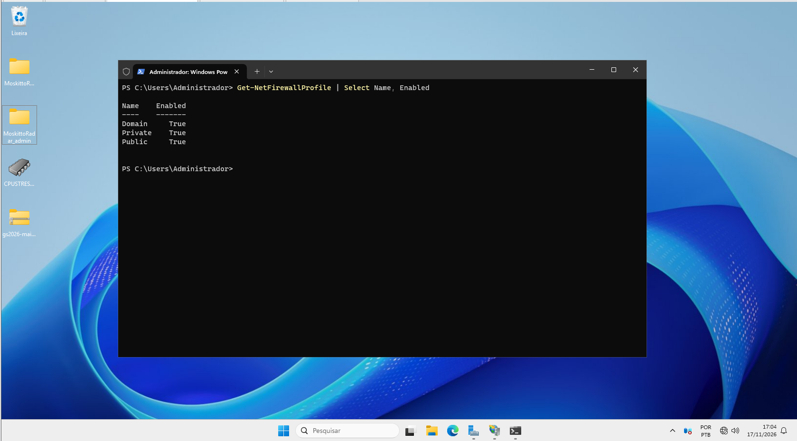
Fonte: Gabriel Kato (17/11/2026).
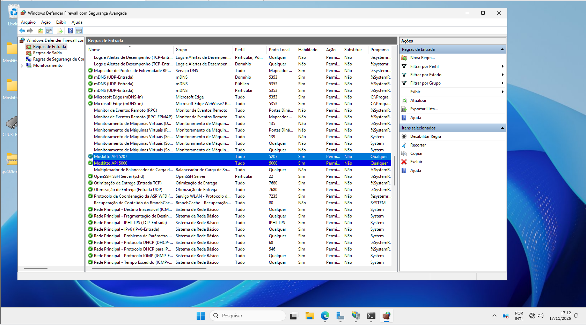
Fonte: Gabriel Kato (17/11/2026).
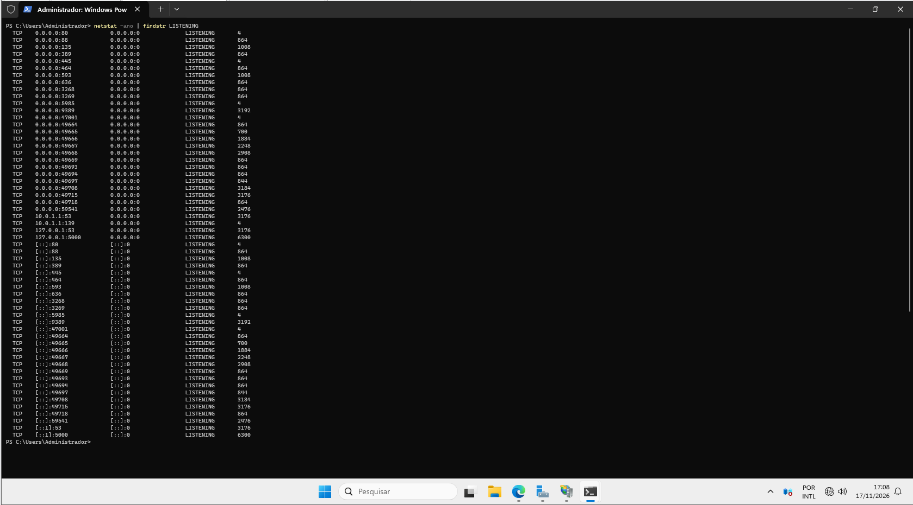
Fonte: Gabriel Kato (17/11/2026).
MoskittoRadarAPI no IIS e /api/health em localhost:5000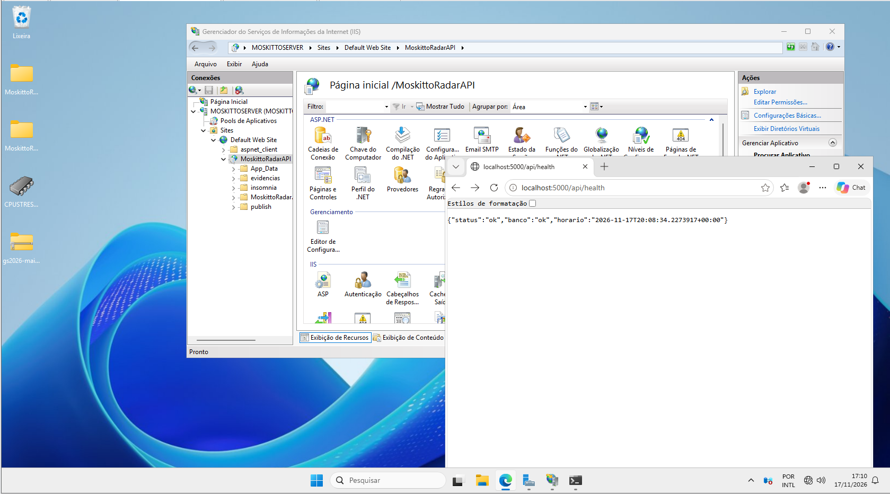
Fonte: Gabriel Kato (17/11/2026).
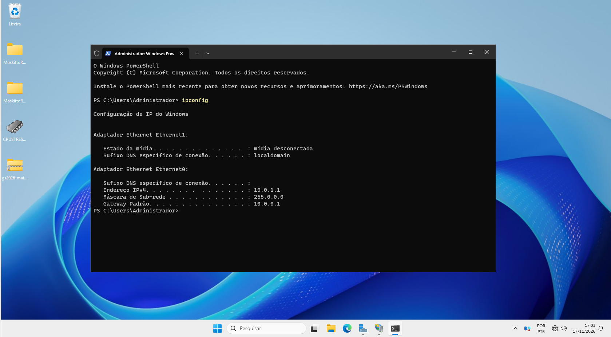
Fonte: Gabriel Kato (17/11/2026).
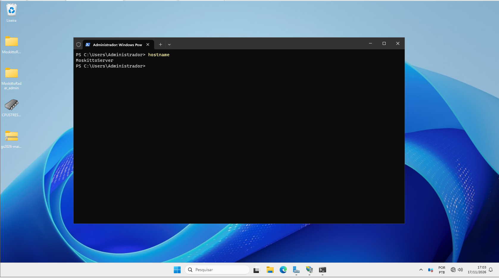
Fonte: Gabriel Kato (17/11/2026).
| O que prova | Só quem tem a chave de um moderador aprova ou rejeita relatos, e cada decisão registra quem decidiu. |
|---|---|
| Resultado | Aprovada Sem chave e com chave errada, a API responde 401 e o relato continua pendente; com a chave, aprova e grava o moderador. |
| Como | Gabriel Couto testou a API local em 17/11/2026 (http://localhost:5207, ambiente Development, moderador de demonstração demo) com o script cyber/evidencias/e4-moderacao.sh. A collection do Bruno da API também cobre os dois casos de 401. |
No código. O filtro [ExigeModerador] protege a rota de moderação. A API não guarda a chave, só o hash SHA-256 de cada uma, vindo da configuração do servidor; a comparação é feita em tempo constante. Quando a chave vale, o apelido do moderador segue para a tabela moderacoes.
var cabecalho = http.Request.Headers.Authorization.ToString();
var chave = cabecalho.StartsWith("Bearer ", StringComparison.OrdinalIgnoreCase)
? cabecalho[7..].Trim() : null;
var apelido = http.RequestServices.GetRequiredService<Moderadores>()
.Identificar(chave);
if (apelido is null)
{
// Vai para o log do servidor: várias recusas seguidas indicam
// alguém tentando adivinhar chaves.
http.RequestServices.GetRequiredService<ILogger<ExigeModeradorAttribute>>()
.LogWarning("Moderação recusada: chave {Situacao} em {Metodo} {Caminho}, IP {Ip}",
string.IsNullOrEmpty(chave) ? "ausente" : "inválida",
http.Request.Method, http.Request.Path, http.Connection.RemoteIpAddress);
http.Response.Headers.WWWAuthenticate = "Bearer";
contexto.Result = new UnauthorizedObjectResult(new RespostaErro(
"Só moderadores podem fazer isso. Envie a chave no cabeçalho Authorization: Bearer <chave>."));
return;
}
http.Items[ItemApelido] = apelido;
Fonte: soa/MoskittoRadar.Api/Seguranca/Moderadores.cs, método OnAuthorization (trecho; quebras de linha ajustadas para caber na página).
Saída do teste (passos 1, 2, 5 e 6), sem as linhas de cabeçalho HTTP Content-Type, Date e Server:
== 1. Sem chave: recusado
$ curl -s -i -X PATCH http://localhost:5207/api/relatos/1552e60b-9be4-4511-8b2c-b3806c77d866/status -H 'Content-Type: application/json' -d '{"status":"aprovado"}'
HTTP/1.1 401 Unauthorized
WWW-Authenticate: Bearer
{"erro":"Só moderadores podem fazer isso. Envie a chave no cabeçalho Authorization: Bearer <chave>."}
== 2. Chave errada: recusado
$ curl -s -i -X PATCH http://localhost:5207/api/relatos/1552e60b-9be4-4511-8b2c-b3806c77d866/status -H 'Content-Type: application/json' -H 'Authorization: Bearer chute-qualquer' -d '{"status":"aprovado"}'
HTTP/1.1 401 Unauthorized
WWW-Authenticate: Bearer
{"erro":"Só moderadores podem fazer isso. Envie a chave no cabeçalho Authorization: Bearer <chave>."}
== 5. Com a chave do moderador: aprovado
$ curl -s -i -X PATCH http://localhost:5207/api/relatos/1552e60b-9be4-4511-8b2c-b3806c77d866/status -H 'Content-Type: application/json' -H 'Authorization: Bearer moskitto-demo' -d '{"status":"aprovado"}'
HTTP/1.1 200 OK
{"id":"1552e60b-9be4-4511-8b2c-b3806c77d866","tipo":"celular","descricao":"Gozei","latitude":-23.569,"longitude":-46.471,"bairro":"dis_355030857","ocorrido_em":"2026-11-12T20:54:00-03:00","status":"aprovado","origem":"mobile"}
== 6. Registro da decisão na tabela moderacoes
$ sqlite3 -header -column soa/MoskittoRadar.Api/App_Data/moskitto.db 'SELECT RelatoId, StatusAnterior, Decisao, ModeradoPor FROM moderacoes WHERE RelatoId = upper('1552e60b-9be4-4511-8b2c-b3806c77d866') OR RelatoId = '1552e60b-9be4-4511-8b2c-b3806c77d866';'
RelatoId StatusAnterior Decisao ModeradoPor
------------------------------------ -------------- -------- -----------
1552E60B-9BE4-4511-8B2C-B3806C77D866 pendente aprovado demo
Fonte: cyber/evidencias/e4-moderacao.txt, gerado por Gabriel Couto (17/11/2026).
O que ainda fica em aberto, pelos controles marcados como parciais ou previstos na seção 6: